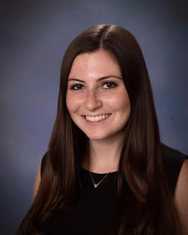

Carly Taylor
Journalism student

Contact details
- Carlytay97@gmail.com
- linkedin.com/in/carlyrtaylor
- https://twitter.com/carly_taylor97
- https://github.com/Carlytay97
Experience
Intern
Time4Coffee
2019-present
I spearheaded the company’s first Facebook strategy. I create and plan social media content for platforms including Facebook, Twitter and Instagram. I edit audio for podcast episodes and write about the businesspeople featured on selected episodes.
Publications Intern
University of Maryland Office of Strategic Communications
2018-present
I coordinate and write news stories for Maryland Today and Terp, which are publications that the office produces. I regularly exercise research, writing and reporting skills. Additionally, I edit and proofread copy for the office’s marketing materials, including advertisements placed in publications.
Production Intern
ABC’s ‘The View’
2018
I learned a lot about television production through shadowing and assisting in the control room, studio floor and edit bay. I helped maintain the well-being of the show’s talent and guests by being hospitable. I worked closely with digital coordinators to verify images, video and music used for the show.
College Associate
Fox News
2017
I wrote scripts for Fox News Edge, which produces news for local, affiliate stations across the country. I edited video packages and interviews. I communicated with stations to learn about local news stories that may be of interest to a wider audience.
Staff Writer
The Diamondback
2016-2017
I pitched three story ideas and wrote at least two articles every week for the student government beat. I attended and covered student government meetings and communicated with government leaders and their constituents regularly. I repurposed stories for social use, specifically on the newspaper’s Snapchat Discover page.
Education
- Bachelor of Arts, Multiplatform Journalism, University of Maryland, 2019
Skills
- Proficient in using Microsoft Office Suite
- Data analysis with Excel
- Photo editing with Adobe Photoshop
- Video editing with Adobe Premiere, Pre-Cut and Easy-Cut
- Audio editing with Adobe Audition
- Social media planning with Hootsuite
- Social media use with Facebook, Twitter, Instagram, Snapchat, YouTube, LinkedIn
- Lynda certification in content marketing
- Website building with WordPress and Weebly